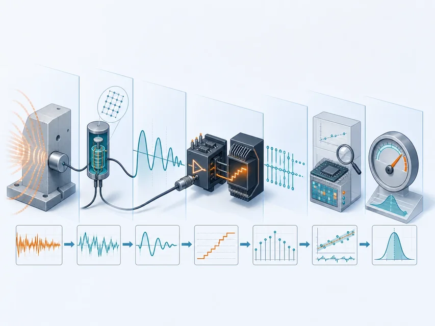

泛在互连
多点、多类型协同感知；记录位置与时间
把温度变化变成可核查的数据
 VER. 2608
Built with impress.js
VER. 2608
Built with impress.js
沿温室温度记录，解释测量、状态判断与各环节的误差
“感”产生测量信号，“知”结合对象、时间、单位和场景解释它
用传感器测量物理、化学或生物量
输出代表光、温度、压力、声音等参量的信号
解析、解释和理解传感器数据
判断测到的是谁、处于什么状态、发生了什么事
传感器输出信号，程序再根据所在温室、采样时间和阈值判断是否异常
温度、湿度、压力、光线、声音、气体或生物量
传感器将变化转换为可传输和处理的信号
从数据中识别对象、状态、趋势或异常
系统根据判断发出告警、请求控制设备，或把结果交给用户
若传感器漂移 3°C，平台即使正常运行，也可能误开风机或漏掉高温告警
| 动作 | 请判断所在阶段 | 请写关键证据 |
|---|---|---|
| 测量轮胎压力 | 填写阶段 | 写出分类理由 |
| 识别行人并估计碰撞风险 | 填写阶段 | 写出分类理由 |
| 根据风险决定减速或制动 | 填写阶段 | 写出分类理由 |
| 制动器执行制动 | 填写阶段 | 写出分类理由 |
按感、知、决策、执行分类；关键是这一步产生了信号、解释还是动作选择
敏感元件感受变化，转换元件输出电信号
被测量 → 敏感／转换 → 信号调理 → 模数转换器 ADC → 数字数据 → 处理／通信
感受被测量的变化
把敏感元件的输出转换为电信号
提供电源、放大、滤波和信号调理
后端系统处理、传输、存储并解释数字数据，不属于传感器本体

数字信号仍有误差，但在一定范围内可以再生
连续变化，长距离传输会受到衰减和噪声影响
误差可能随路径逐步累积
幅值离散，可在一定范围内判决和再生，配合纠错提高可靠性
便于统一处理和传输
数字化仍有采样、量化和测量误差；读数应注明采样率、分辨率、校准时间与允许误差
本例量程0—4 V、2位、每隔1 ms采样；4个区间各宽1 V
| 采样时刻 | 电压 U | 所属区间 | 数字码（二进制） |
|---|---|---|---|
| 0 ms | 0.4 V | 0 ≤ U < 1 V | 0（00） |
| 1 ms | 1.7 V | 1 ≤ U < 2 V | 1（01） |
| 2 ms | 4.0 V | 3 ≤ U ≤ 4 V | 3（11） |
按区间下限编号，满量程4 V用最高码3；区间2对应2 ≤ U < 3 V
采样率改变时间疏密，位数改变电压分区；两者都不自动消除传感器偏差
理想 ADC 的量化步长变小，不能自动修正传感器的系统偏差
| 比较条件 | 步长（mV） | 它说明什么 |
|---|---|---|
| 0—5 V，8位 | 5000/256 ≈ 19.53 | 区间量化更粗 |
| 相同量程，12位 | 5000/4096 ≈ 1.22 | 量化步长缩小16倍 |
传感器总是多报约2°C，换 ADC 后偏差仍可能存在；此时应检查校准
平台比较多点温度，结合节点位置检查高温区与观测空缺
节点：感知＋计算／通信＋能量
路径：节点 → 自组织／有线网络 → 汇聚 → 平台与应用
多点、多类型协同感知；记录位置与时间
感知、计算、通信和能量模块组合；智能传感器 Smart Sensor 可在节点内校准、汇总和诊断
接收多跳数据并接入更大网络
先算少传了多少字节，再看是否丢失重要变化、本地是否增加了计算
| 处理方式 | 一分钟内的上传量 | 保留或损失 |
|---|---|---|
| 每秒1条，每条16字节 | 60×16 = 960字节 | 保留逐秒变化 |
| 均值与极值每分钟1条 | 1×24 = 24字节 | 保留摘要，可能漏掉短暂峰值 |
| 两个传感器交叉验证 | 未必减少上传量 | 用多源信息检查异常 |
这里仅计算应用数据，不含协议开销；不能把少传40倍直接说成电池寿命增加40倍
用参考值计算误差，再说明还有哪些误差没有消失
下面有的按测什么分类，有的按怎样测分类；选择时还要看现场环境
接触或非接触测量热状态
气敏传感器检测气体成分或浓度
利用发射与回波进行测距或探测
把光学场景转换为图像等高维数据
利用外界扰动引起的光信号变化进行测量
这些是教材中的典型例子，并非全部类型；同一传感器可属于几类，选择时还要考虑环境和维护
测量要适应对象、环境与后续判断；多种传感器可以互相印证
| 任务 | 可能的感知方式 | 关键约束 |
|---|---|---|
| 夜间围界入侵 | 多源融合：振动、红外与视频 | 误报、漏报和全天候运行 |
| 管道温度监测 | 接触式温度测量 | 安装、量程和耐受 |
| 气体泄漏识别 | 气体与温湿度测量 | 选择性、校准和安全 |
| 车辆距离测量 | 超声或图像等 | 反射、遮挡和实时性 |
| 桥梁形变监测 | 光纤测量、应变测量或位移测量 | 长期读数是否稳定，安装后能否测到桥梁变形 |
| 需求 | 选择感知方案 | 请写判断依据 |
|---|---|---|
| 监测温室温度趋势 | 填写感知方案 | 填写判断依据 |
| 发现气体浓度越界 | 填写感知方案 | 填写判断依据 |
| 识别围栏攀爬行为 | 填写感知方案 | 填写判断依据 |
| 观察桥梁细微形变 | 填写感知方案 | 填写判断依据 |
选择传感器后，要解释测到的信号为什么能用来判断目标情况
节点通过多跳协作把数据送到汇聚节点
示意路径：节点 → 邻居／多跳 → 汇聚节点 → 更大网络
覆盖圈=感知范围，不是通信范围；箭头=示例链路；汇聚节点=上行出口；电量=能量约束
节点要完成测量、处理和通信，还要有足够能量，WSN 才能持续工作
测量环境或对象状态
过滤、融合和路由判断
与邻居或汇聚节点交换数据
电池、供电或能量采集
选择这些模块时，要比较能测多大范围、数据多久到达、是否容易丢失，以及电池能用多久
增加节点前先检查覆盖空洞、链路拥塞和换电池频率
点覆盖监测目标，栅栏覆盖检测穿越，面覆盖观察整个区域
覆盖空洞会让系统看不见关键位置
休眠、低功耗通信和本地融合通常能节能；多跳是否节能取决于链路条件
节点失效会改变路由和覆盖范围；无源 Passive 设备也消耗能量，需由外部场等供能，不能理解为免维护
| 现象 | 请写优先检查对象 | 怎样检查并记录结果 |
|---|---|---|
| 区域出现感知空洞 | 填写优先检查对象 | 写出检查方法与所需记录 |
| 节点数据到达很慢 | 填写优先检查对象 | 写出检查方法与所需记录 |
| 电池很快耗尽 | 填写优先检查对象 | 写出检查方法与所需记录 |
检查哪些位置测不到、数据经过哪些节点、剩余电量多少，以及汇聚节点是否收到数据
用 seq=18 对照同一次观测；下表两行分别是独立情境
| 已知记录 | 下一项检查 | 能区分什么 |
|---|---|---|
| n1本地有 seq=18、29.1°C；汇聚接收日志无该记录 | 选节点或链路 | 说明判断依据 |
| 汇聚已收到 n1 的 seq=18；平台接收日志无该记录 | 选节点或链路 | 说明判断依据 |
缺日志不等于丢包；先查缺失点之前的发送、转发、接收，再核对记录机制
比较误报漏报、响应时间、换电周期，以及告警后的处置结果
| 现场 | 要做到 | 同时要检查 |
|---|---|---|
| 围界监测 | 日夜发现攀爬并减少误报、漏报 | 传感器清洁、融合规则和告警后谁响应 |
| 生态监测 | 长期记录且少干扰环境 | 防水加固、电池、覆盖空洞和维护路线 |
| 矿井安全 | 恶劣环境中及时可靠告警 | 防爆、断网备用路径和撤离响应 |
| 农业与用电 | 看出空间差异和长期趋势 | 换电成本、反馈动作和判断依据 |
更准的读数可能增加耗电与维护成本，检查方案时要一并比较
01
02
03
04
05被测对象与参量
→ 传感器与安装
→ 节点、网络与能量
→ 数据融合与判断
→ 告警、控制或服务反馈说清测什么量、发现什么事件，以及在哪里、何时测
说明测量与供电方式、量程、保护措施和维护人
画出覆盖范围和传输路线，说明数据在哪里汇总、多久上传
统计误报漏报，测延迟与电池寿命，并指定告警处置人员
参考温度与设备读数给出了比“精度高”更具体的依据
| 给定观察 | 请判断下一步 |
|---|---|
| 多个温度点都多报约2°C | 增加ADC位数能否消除这一现象？ |
| 减去2°C后，残余误差有正有负 | 能否据此宣称完全没有误差？ |
| 改为每分钟只上传均值 | 如何发现仅持续1秒的高温峰值？ |
| 上传字节少了，电池仍很快耗尽 | 还应测量哪些模块的耗电？ |
不看前页，沿温度变化说明测量、传送、通风判断与设备维护